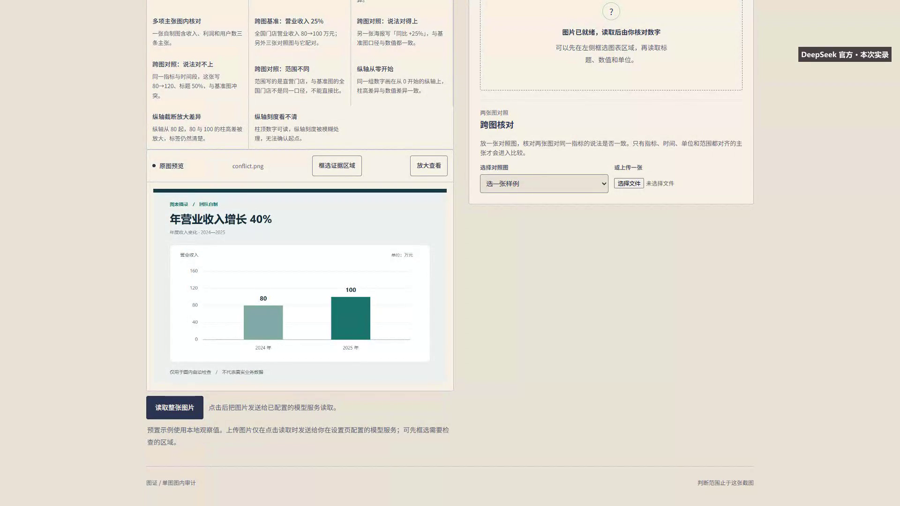
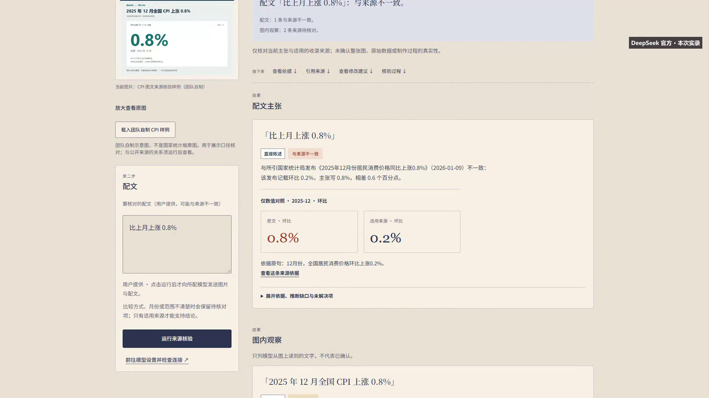

把图表截图和配文放在一起，
检查数字、推断与来源依据。
图证面向只有图表截图、没有原始数据文件的普通读者。用户可以先检查截图中的数字和计算，也可以加入配文，对照适用的公开资料，分别查看每条主张的依据和缺口。
上传图表 → 模型读取 → 用户确认或更正 → 程序计算与来源核验 → 查看引用、工具过程及修改建议。
图内数字一致，只说明截图中的计算自洽；来源判断也只覆盖当前收录的资料，不能据此保证现实世界全部事实正确。没有适用来源或比较口径时，保留待核对。
安装 Node.js 24 和 npm，解压源码，在项目根目录执行：
npm ci npm run dev
浏览器打开 http://127.0.0.1:5173。选择预置样例可离线体验图内确认、计算和记录。新图片读取与来源核验使用设置页配置的模型服务，实际调用可能产生费用；API Key 由本机回环服务保存，不写入公开材料。
代码与完整 Git 历史：github.com/Iskuyal/tuzheng。运行细节见仓库 README、docs/DEVELOPMENT.md 与 docs/MODEL-CONFIG.md。
AI 用于图表结构化读取、主张拆解及受限工具调查；数值计算、参数校验、引用适用性和部分改写保护由程序完成。当前采用固定官方资料库检索，不宣称开放网页搜索、向量数据库或 MCP 服务。
| 验证类别 | 已取得的记录 | 解释范围 |
|---|---|---|
| 真实模型实录 | 2026-10-18，DeepSeek 官方模型共7次 HTTP；视频画面来自实际生产页面 | 是功能演示，不是正式盲审成绩 |
| 离线行为验证 | 2026-10-28 归档：456项测试、类型检查和材料预检通过 | 离线或替身检查，不当作真实模型效果 |
| 第二台 Windows | 用户确认另一位开发者已验收 | 原机器报告和配置未提供，不代填测试数字 |
| 题集复核 | 五个官方原页、30条资料数值已核对；v2补明h09季调口径 | 代理复核不等于人员盲审；完整三臂真实评测未完成 |
| 组成 | 实现用途 |
|---|---|
| Vue 3、TypeScript、Vite | 四页工作台、组件、响应式布局和构建 |
| Node.js、Express | 仅监听本机回环的 API、模型适配与配置管理 |
| 多模态结构化输出 | 读取截图中的指标、数字、月份和比较方式，供用户复核 |
| Function Calling与资料检索 | 限制工具、轮次和补证范围，保留调查轨迹 |
| 确定性领域规则 | 计算、来源适用性、版本关系、引用与改写校验 |


完整视频为 MP4，398.233秒，1920×1080、30 fps，含AAC音轨。用户已完整看听，并确认普通话讲解、音画对应、混音和最终走查可作为提交版。原片、技术检查与模型请求记录在仓库按日期归档。
片中缺比较口径的案例没有触发追问或执行恢复，保留待核对；错误恢复只演示到合法图片输入。截图及视频不用于宣称未演示的能力已通过。
团队于2026-10-29确认：图证此前未发表、未获奖。当前公开代码仓库用于展示本次作品的实现及开发过程，不在此填写其他项目的经历或成果。
团队确认本项目为原创开发，不是在其他现成项目上改造、包装参赛。因此没有需要列示的“基础项目及优化部分”。开发中使用 Vue、Vite、TypeScript、Express、模型 SDK 等开源依赖，不将这些通用依赖当作团队原创成果。
第三方依赖及锁定版本见 package.json、package-lock.json；依赖按各自许可使用。示例图由团队自制，官方资料以原始链接、必要摘录与数值方式引用，资料发布者不属于本团队。
已实现图内核对、跨图与纵轴检查、固定资料库来源核验、工具轨迹和逐处修改建议。尚不声称完成真实读者研究、未知领域泛化、同口径来源分歧判断、长期公网部署或完整三臂真实模型评测。
本文件按预指导表单第6项的七个方面编写。团队姓名、学校、组别、发表获奖及原创声明来自用户确认；未在公开文档收集手机号、赛事UID或模型密钥。